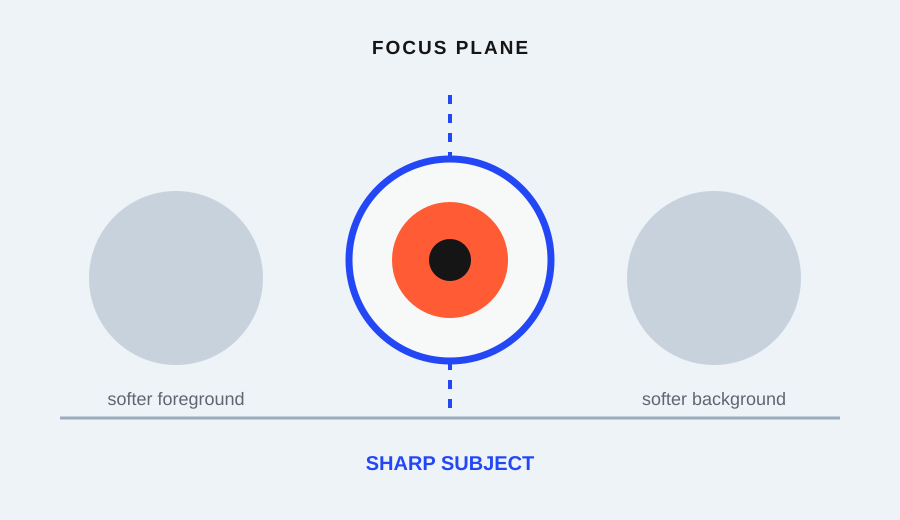

Before replacing a lens or assuming a camera is defective, run five low-cost checks: stabilize the camera, use a static target, confirm the focus point, change the shutter-speed direction, and repeat the frame under the same conditions. Stop when one cause explains the softness. Escalate to a qualified repair or support channel only when the blur remains repeatable after the setup is controlled.
These checks are not a laboratory resolution test. They are a short diagnostic path for separating camera movement, subject movement, missed focus, and inconsistent conditions.
The five-check shortlist
| Check | What it isolates | What to compare | Stop signal |
|---|---|---|---|
| 1. Stabilize the camera | Camera movement | Supported frame versus handheld frame | Background edge becomes clearer when support is added |
| 2. Use a static target | Subject movement | Same detailed target in repeated frames | Softness remains with the subject fully still |
| 3. Confirm the focus point | Missed focus | Intended detail versus the plane that is sharp | A different plane is sharp, or the focus target was elsewhere |
| 4. Change shutter direction | Exposure-time blur | Faster and slower test frames | Blur changes with shutter speed |
| 5. Repeat the setup | Random or repeatable fault | Same target, distance, light, and focus method | Softness repeats under controlled conditions |
Start with the first check that is easiest to control. Do not change the lens, focus mode, sharpening settings, and lighting at the same time; that makes the result harder to interpret.
1. Stabilize the camera
Choose a detailed, non-moving target such as printed text on a box, a book cover, or a textured object. Make one frame handheld, then make another with the camera supported on a stable surface or held with a more deliberate grip. Keep the framing and focus target as similar as possible.
Compare a straight edge or small letter in the background and the subject detail. If the supported frame is clearer, the first suspect is camera movement rather than the lens. A sharper result after support does not prove the lens is perfect; it tells you which condition to control before changing equipment.
2. Use a static target
A moving person, leaf, curtain, or pet can make a sharp lens look soft because the subject changed during the exposure. Replace the moving subject with a target that stays still. Use the same distance for every frame and avoid a surface that vibrates when touched.
If the softness disappears on the static target, return to the original scene and check subject movement separately. A faster shutter or a different timing method may solve that problem. If the static target remains soft, continue to the focus check instead of drawing a gear conclusion.
3. Confirm where focus landed
Tap or select the intended focus point when the camera provides that control. Use a target with details at slightly different distances: a book edge in front of a wall, for example. Review the exact plane that should be sharp, not just the overall impression of the frame.
If a background edge is sharp while the selected subject is soft, the camera may have focused on the wrong plane. If the centre is sharp but the edge is soft, the camera may be too close, the subject may not be parallel to the sensor, or the lens may have a depth-of-field limitation. Do not call this a lens defect until the focus target and subject geometry are controlled.
The UK government photo guide lists focus, brightness, a clearly visible subject, and freedom from distracting information as qualities that make a photo usable. That is a useful review order: identify the intended detail before judging the equipment.
4. Change the shutter-speed direction
Keep the static target and focus point the same while making one faster-shutter test. If the frame becomes clearer when the exposure time is shorter, movement was part of the softness. If the target remains equally soft, the cause may be focus, distance, optics, or a processing setting.
Do not treat a faster shutter as a universal cure. It can make a dim frame darker, and it may force the camera to change aperture or ISO. Record those changes so you know which variable moved. The purpose of this check is diagnosis, not to find a magic shutter number.
5. Repeat the setup
Now repeat the clearest controlled version: same target, same distance, same light, same support, same focus method, and a short sequence of frames. Compare the same detail in every frame at the same viewing size. If only one frame is soft, timing, vibration, or a temporary focus miss may explain it. If every controlled frame is soft in the same way, the result is more useful for a support or repair conversation.
Write down the setup rather than relying on memory. Include the target, distance, support, focus point, shutter direction, and whether the file was resized or heavily edited. A repeatable description gives a technician something actionable and prevents a vague “the lens is blurry” report.
A completed diagnostic path
Suppose a beginner thinks a lens is defective because an indoor portrait looks soft. The five checks might produce this sequence:
- A supported frame of a book is clearer than the handheld frame: camera movement is present.
- A static target is clear at the same distance: subject movement contributed to the portrait softness.
- A focus-point test shows the background edge is sharp: the focus target missed the face.
- A faster shutter improves the moving hand: exposure time was part of the remaining blur.
- Repeated supported frames of the static target are consistent: there is no current reason to treat the lens as the first suspect.
This result does not certify the equipment. It tells the reader which conditions to fix before spending money or requesting repair.
When to stop and escalate
Stop the self-check when the softness has a repeatable explanation, such as camera movement, subject movement, or a missed focus target. If the controlled static target remains consistently soft across distances and focus methods, preserve the original files and record the setup. Then contact the camera or lens maker, a qualified service centre, or a knowledgeable retailer for a hardware-specific assessment.
Do not open the lens or adjust internal components from a beginner checklist. A short controlled test is useful because it narrows the question; it is not a substitute for repair expertise or a lab chart.
Research sources
Sources
- Photography for beginners: master the basics — Adobe
- A Basic Look at the Basics of Exposure — Nikon USA
- Camera settings 101: Getting to know the basics — University of Queensland Student Employability Centre
- Nikon School: Shooting Action — Nikon School
- How to take a good photo: Photo guide — UK Government